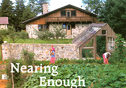
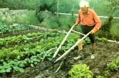
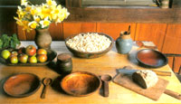
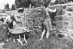
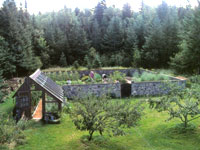
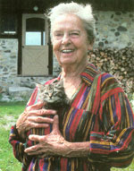

Nearing Enough
A reflection on the simple-living lessons offered by legendary homesteaders Helen and Scott Nearing, authors of Living the Good Life.
October/November 2003
By Linnea Johnson
By candlelight and snuggled away under quilts in a cozy, slant-ceiling guest room one winter's night long ago, I read Helen and Scott Nearing's Living the Good Life, which had been left on the bedside table for me by my host.
The Nearings wrote, "We maintain that a couple, of any age ... with a minimum of health, intelligence and capital, can adapt themselves to country living, learn its crafts, overcome its difficulties, and build up a life pattern rich in simple values and productive of personal and social good."
Helen and Scott Nearing lived a self-sufficient life in the 1930s and '40s in Vermont and, later into the 1990s, in Maine, their principles always directing their choices.
Still today, the Nearings' initial questions, dilemmas and fears are shared by many people who want to take their lives into their own hands and live in a simpler, less routinized, more socially sensible manner, with sun, wind and rain on their faces and organic food in their bellies, while leaving far, far behind them highrises and fluorescent lights, suburbs and office cubicles, processed air and food and water, the proverbial Joneses, and those ubiquitous racing rats equipped with cell phones and beepers.
Can we feed ourselves from our own garden? Will a farm be another sort of drudgery? Is a principled life really a possibility in today's world? Can I learn all I need to know? Will the garden tie me down in new and even more profound ways? Can I integrate the life of the mind and continue to do my art/music/writing even as I pick off chewing creatures from my Swiss chard? Can I really live what I believe?
Scott Nearing (1883-1983), well educated and teaching in higher education, wrote textbooks, pamphlets and essays, and lectured widely, protesting inequity, exploitation and social injustice as his way of life, as a tenet of living. In Conscience of a Radical (1965), he wrote, "My studies and my personal experiences led me to avoid superficial living; led me to dig to the roots of personal life and social problems; led me, in other words, to become a radical."
In 1919 he was tried by a U.S. federal grand jury (and cleared) on charges of obstructing recruitment and enlistment in the U.S. military. He had written a pamphlet, The Great Madness, asserting that the causes of World War I were largely commercial, benefiting corporations and the wealthy.
Scott Nearing criticized unjustness and hypocrisy wherever he found it and, indeed, he was ousted from the Communist Party for having published a book which the Party heartily disliked.
By 1930 he had lost a succession of four academic jobs because of his radical views on a matrix of issues such as opposing child labor laws and opposing U.S. military imperialism.
A MEETING OF THE MINDS
Helen Knothe's (1904-1995) early study of music, Eastern religion and theosophy led her to India in the early 1920s, and then to Australia to live in community on Sydney Harbor. She met Scott in 1930, "and there started my real-life education."
Together, Helen and Scott moved to New York City, where they "were exceedingly poor" and yet were "convinced that life could be good and were determined to make ours so."
In The Good Life Album of Helen and Scott Nearing, a photographic memoir, Helen Nearing wrote, "Born and brought up in the richest nation on earth, with its multitudinous gadgets and gimcracks as part and parcel of our daily lives, we realized that we must be prepared to reject these toys, to strike out for ourselves and to pioneer in the real sense of that term."
And pioneer they did, choosing the United States over becoming expatriates, and choosing New England for its seasons and its Old World lineage. In Vermont, in 1932, they bought a run-down 65-acre farm that was nestled in a lovely wilderness setting. "Conveniences," they wrote, "consisted of a pump and a black iron sink in the kitchen and a shovel-out backhouse at one end of the woodshed."
In Living the Good Life they asserted, "We were seeking an affirmation, a way of conducting ourselves among those values which we considered essential to the good life ... values including: simplicity, freedom from anxiety or tension, an opportunity to be useful and to live harmoniously ... "
They said they "... would have preferred the cooperative or communal alternative, but ... there were none available or functioning into which we could happily and effectively fit." However, they generated community by lecturing and writing and by hosting visitors to their homestead. They also sold at cost or gave away parcels of their land to like-minded people.
From the beginning, the Nearings made the decision to leave the "wage slavery" of a market economy and, instead, to commit to a "use economy." They wrote that "a market economy seeks by ballyhoo to bamboozle consumers into buying things they neither need nor want, thus compelling them to sell their labor power as a means of paying for their purchases."
"Homesteading," Scott Nearing wrote in The Making of A Radical, "is based on the production of goods and services which are consumed directly without the intervention of the market. In our case we raised food and ate it, cut fuel and burned it, constructed buildings and lived in them, thus eliminating the major cash costs of living ...
"Commodity production and high-pressure selling have turned millions of talented humans into spectators who stand outside all the creative processes of nature and society and feel their own creative impulses shrivel and die ... Following the rhythms of nature provides more than a formal education; it stimulates an unfolding and growth and attaches the fortunate individual irrevocably to Mother Earth."
Freed from material clutter, time and energy waste, and nonessentials, Helen and Scott Nearing felt "as free as a caged wild bird who finds himself once more on the wing."
Freed from consumerism, yes, but they were not dropping out of society. The Nearings wrote, "We were not seeking to escape. Quite the contrary, we wanted to find a way in which we could put more into life and get more out of it. We were not shirking obligations but looking for an opportunity to take on more worthwhile responsibilities. The chance to help, improve, and rebuild was more than an opportunity. As citizens, we regarded it as an assignment."
THE GOOD LIFE FORMULA
That candlelit night long ago, I read about how Scott, a former academic, and, Helen, a musician, built their first stone house while gardening among Vermont boulders, and about their decid ing upon maple syrup as a cash crop to round out their livelihood.
I read about their 10-year "pay-as-you-go" plan, their "Constitution of our household organization" for living wisely and for avoiding debt. They planned to "make a living under conditions that would preserve and enlarge joy in workmanship, would give a sense of achievement, thereby promoting integrity and self respect; would assure a large measure of self-sufficiency and thus make it more difficult for civilization to impose restrictive and coercive economic pressures, and make it easier to guarantee the solvency of the enterprise."
They were committed to raising as much food as they could, given local soil and climate, and to eating with the seasons. As they kept no animals, they were vegetarians who ate raw, whole food; this, in turn, meant that they spent scant time in food preparation. They maintained that eating in-season, fresh, vital food that they had grown themselves kept them healthy.
"One of the chief factors that took us out of the city into the country was an awareness of the menace to health arising out of food processing and poisoning and a determination to safeguard ourselves against it," the Nearings wrote. "Food processing, poisoning and drugging is undermining the health of the American people as well as yielding large profits to the individuals and corporations engaged in processing, poisoning and drugging."
The Nearings' rendering of The Good Life is neither fascist nor puritanical, nor a capitalist commitment to work for work's sake, for God's sake or for the bottom line's sake. The Nearings' theory and practice of living The Good Life is an integrated balance of all works necessary to a thoroughgoing, unequivocal, absolute life, including embracing good friends, developing live soil, being socially aware and useful, growing vital food, and creating leisure time, music, writing and art.
Their Good Life strategy also included using available building materials and doing the work of putting up their own stone and wood buildings, and even making many pieces of equipment themselves, such as ladders and sleds, while limiting the amount of purchased equipment. If they needed a bulldozer, chainsaw, plow or tractor for a few hours or days, they would rent, trade or barter for them with their neighbors.
Helen Nearing wrote: "... we made serious and various attempts to live at five levels: with nature; by doing our daily stint of bread labor; by carrying on our professional activities; by constant association with our fellow citizens; and by unremitting efforts to cultivate the life of the mind and spirit."
They wrote that these five levels of living were contained in what they came to call their "four-four-four formula." Four hours of each day were directed towards "bread labor," the work that grows food or shovels out the outhouse.
Four hours a day were devoted to "professional activity," according to one's skills, loves and special competencies, whether that be playing the violin or writing books.
And four hours a day were "dedicated to fulfilling our obligations and responsibilities as members of the human race and as participants in various local, regional, national and world civic activities."
The Nearings' legacy continues to be the polestar, gyroscrope, map, heart, conscience and plumb line for living a good life.
CONTINUING THE GOOD LIFE
When Vermont began to be gobbled up by paper companies and the ski industry, the Nearings decided to move. "For 19 years we had homesteaded in the Green Mountains of Vermont. Now, as we pictured our future, why not spend the next 20 years beside the sea?" In the spring of 1952, Helen Nearing, 49, and Scott Nearing, 70, moved to Cape Rosier, Maine, which then was still isolated and affordable.
In Continuing the Good Life the Nearings wrote that on their first Maine homestead, they "put up nine stone and concrete constructions. One of the first jobs was the spillway and concrete core for the earth dam that gave us our acre and a half pond. Other undertakings early in our stay were several water tanks for the garden and the blueberry plantation, and a new tank for our bubbling spring. Another project was the 420-foot stone wall which encircled our quarter-acre vegetable garden. In the northwest corner of this garden wall we built a greenhouse with the stone wall as a backdrop and sun reflector. To the west of the greenhouse, also along the garden wall, we built a stone garage."
To Learn More about Simple Living

Helen Nearing, pictured
outside of her Harborside,
Maine, home.
Legendary homesteaders Helen and Scott Nearing provided inspiration and information for the back-to-the-land movement that coincided with the founding of Mother Earth News. You can read more by and about them in MOTHER'S new online Archive at http://www.motherearthnews.com .
The Nearings' books, Living theGood Life: How to Live Sanely and Simply in a Troubled World (1954) and Continuingthe Good Life (1979), were republished as TheGood Life in 1989. That book recently has gone out of print (temporarily, we believe), but used copies are available from specialty bookshops, and new editions of several of their other books, including TheMaking of a Radical, can be ordered from www.chelseagreen.com .
The Nearing homestead, formerly the Forest Farm but now called The Good Life Center, is located at 372 Harborside Road; Harborside, Maine 04642; (207) 326-8211; www.goodlife.org . Admission is free, but hours are limited, so call before you go. The Nearings' papers are archived at the Thoreau Institute in Lincoln, Massachusetts.
They built using "... sticky concrete, between two [moveable] wooden forms, with stone facing to the front. The stone [is not] a veneer, but is bonded into the concrete wall, with the rock often extending through three-quarters or more of the wall" (see photo, Page 24).
In 1972, when Helen was 68 and Scott was 89, they prepared for one last move. They cleared several acres of forest, built some roads and began building three stone buildings overlooking Spirit Cove in the Penobscot Bay.
Famed folk singer Pete Seeger is quoted as saying, "We may yet be able to save the world before we destroy ourselves, and Scott and Helen showed us ways to do it," though neither Scott nor Helen Nearing believed they had the answers to all outstanding social problems. "For us," Helen wrote, "[the move to the country from the city] proved to be a means of steadying and stabilizing one household in a teetery world and of providing the members of that household with an economic base from which they could make their leisure time and contribute toward the advancement of the general welfare."
In The Making of A Radical, which was Scott Nearing's autobiography, written in 1963 (when he was 80 years old), he stated, "I have done my best to learn, to teach, and to build my ideas into the life of the United States and any other part of the human society that was willing to listen, study and act ... I assume that ardent endeavor to discover the ideal, and to embody it in individual and collective life, develops the bone and sinew of body, mind and spirit."
Between the two of them, the Nearings authored more than 50 books as well as innumerable articles, essays and pamphlets. They lectured all over the world. In 1965 they wrote, "The good life is never stable, never secure, never easy and never ended. It is a series of steps or stages, one leading into the other and all, in their outcome, adding, not subtracting; augmenting, not diminishing; building, not destroying; creating, not annihilating."
From my cozy first read of the Nearings' principled homesteading journey to this very day, their commitment to body, mind, spirit, principle, one another, community and society heartens me whether I select my vegetables from my own garden or from the farmer's stand down the road.
When I am in Maine, I visit their last homestead, now The Good Life Center, which keeps their writings, library and gardens open to the public. A bookshop now fills Scott's study and through a vigorous lecture/discussion series and its stewardship and volunteer programs, the Center still gathers together seekers of the Good Life in the Nearings' hand-built living room.
Credited by many as being the greatgrandparents of the back-to-the-land and simpler-living movements, the Nearings continue, through their written legacy, to be the polestar, gyro scope, map, heart, conscience and plumb line for living a good life.
If they were correct when they asserted that capitalist culture irritates the hunting and gathering instinct beyond need, beyond wanting, even beyond longing and, indeed, to greed and to addiction to wanting and greed, then perhaps the corrective is to, like the Nearings, move away from induced neediness towards the sanity of satiety. That is, to move away from the peripatetic search for 'More' towards 'Enough.' Their work has broken open the ground before us as surely as if they'd gotten up earlier than we did and, forceful in the powerful morning light, turned over a garden of healthy, vital soil. It's all there for us, ready, if we choose to dig and plant.
Linnea Johnson lives on a homestead in Topeka, Kansas, where she writes stories, essays and poems. Like the Nearings, she holds great affection for the beautiful coast of Maine.
Mother Earth News
|
 Lynn Karlin At ages 68 and 89, Helen and Scott began building these stone buildings and garden walls to make their last homestead, which is open to the public today. |
 Richard Garrett Scott Nearing tends the productive organic garden he and Helen made at their final Forest Farm homestead on Cape Rozier, Maine. |
 Lynn Karlin The Nearings' simple-living philosophy us reflected in the wooden bowls and plain foods they prepared. |
|
Courtesy Chelsea Green Publishing Helen Knothe and Scott Nearing in 1931. |
 Richard Garrett The Nearings built homes and garden walls of stone in both Vermont and Maine using slipform masonry. To learn more about this sustainable building technique, see ""The Art of Slipform Masonry"" video on MOTHER's Bookshelf, Page 120. |
 Lynn Karlin Helen Nearing, pictured outside of her Harborside, Maine, home. |
|
 |
|
|